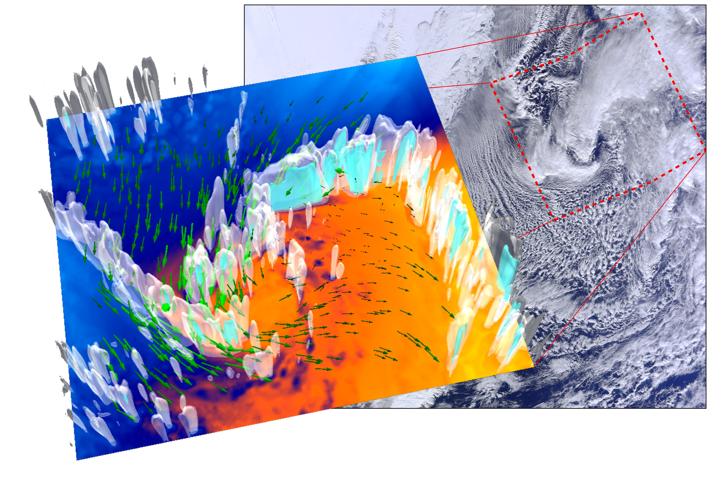

Polar lows
Denis Sergeev
13 March 2017
Outline
What are polar lows?
Example: ACCACIA PL
Large-scale conditions?
Satellite image + 3D image
Dynamics: vorticity budget + equation
Environment factors influencing PL development
My current research: influence of orography and sea ice
Let's remove Svalbard!
Some results of the sensitivity experiments
Intro
Polar lows are one of the most extreme events in the polar regions
They pose danger to coastal infrastructure and offshore activities
ACCACIA Polar Low
NEODAAS NERC Satellite Receiving Station, Dundee University
ACCACIA Polar low

Fun
My video
Figure
Thanks!
Questions?